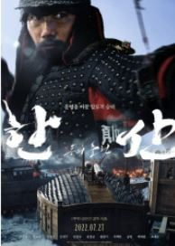
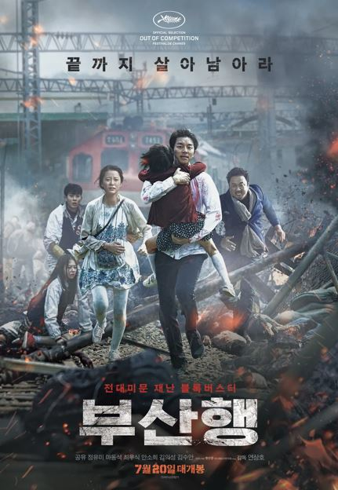

MOVIE INTRODUCE
밀수
열길 물속은 알아도 한길 사람 속은 모른다! 평화롭던 바닷가 마을 군천에 화학 공장이 들어서면서 하루아침에 일자리를 잃은 해녀들.
먹고 살기 위한 방법을 찾던 승부사 '춘자'(김혜수)는 바다 속에 던진 물건을 건져 올리기만 하면 큰돈을 벌 수 있다는 밀수의 세계를
알게 되고 해녀들의 리더 '진숙'(염정아)에게 솔깃한 제안을 한다. 위험한 일임을 알면서도 생계를 위해 과감히 결단을 내린
해녀 '진숙'은 전국구 밀수왕 '권 상사'를 만나게 되면서 확 커진 밀수판에 본격적으로 빠지게 된다. 그러던 어느 날,
일확천금을 얻을 수 있는 일생일대의 기회가 찾아오고 사람들은 서로를 속고 속이며 거대한 밀수판 속으로 휩쓸려 들어가기 시작하는데...
물길을 아는 자가 돈길의 주인이 된다!
범죄도시
신종 마약 사건 3년 뒤, 괴물형사 ‘마석도’(마동석)와 서울 광수대는 배달앱을 이용한 마약 판매 사건을 수사하던 중
수배 중인 앱 개발자가 필리핀에서 사망한 사건이 대규모 온라인 불법 도박 조직과 연관되어 있음을 알아낸다.
필리핀에 거점을 두고 납치, 감금, 폭행, 살인 등으로 대한민국 온라인 불법 도박 시장을 장악한 특수부대 용병 출신의
빌런 ‘백창기’(김무열)와 한국에서 더 큰 판을 짜고 있는 IT업계 천재 CEO ‘장동철’(이동휘). ‘마석도’는 더 커진 판을
잡기 위해 ‘장이수’(박지환)에게 뜻밖의 협력을 제안하고 광역수사대는 물론, 사이버수사대까지 합류해 범죄를 소탕하기 시작하는데…
나쁜 놈 잡는데 국경도 영역도 제한 없다! 업그레이드 소탕 작전! 거침없이 싹 쓸어버린다!
비상선언
베테랑 형사 팀장 인호(송강호)는 비행기 테러 예고 영상 제보를 받고 사건을 수사하던 중 용의자가 실제로 KI501 항공편에
타고 있음을 파악한다. 딸의 치료를 위해 비행 공포증임에도 불구하고 하와이로 떠나기로 한 재혁(이병헌)은 주변을 맴돌며
위협적인 말을 하는 낯선 이가 신경 쓰인다. 인천에서 하와이로 이륙한 KI501 항공편에서 원인불명의 사망자가 나오고,
비행기 안은 물론 지상까지 혼란과 두려움의 현장으로 뒤바뀐다. 이 소식을 들은 국토부 장관 숙희(전도연)는
대테러센터를 구성하고 비행기를 착륙시킬 방법을 찾기 위해 긴급회의를 소집하는데…
외계인
2022년 현재, ‘가드’(김우빈)’와 ‘썬더’는 인간의 몸에 가두어진 외계인 죄수를 관리하며 지구에 살고 있다.
어느 날, 서울 상공에 우주선이 나타나고 형사 ‘문도석’(소지섭)은 기이한 광경을 목격하게 되는데..
한편, 630년 전 고려에선 얼치기 도사 ‘무륵’(류준열)과 천둥 쏘는 처자 ‘이안’(김태리)이 엄청난 현상금이 걸린
신검을 차지하기 위해 서로를 속고 속이는 가운데 신검의 비밀을 찾는 두 신선 ‘흑설’(염정아)과 ‘청운’(조우진),
가면 속의 ‘자장’(김의성)도 신검 쟁탈전에 나선다. 그리고 우주선이 깊은 계곡에서 빛을 내며 떠오르는데…
2022년 인간 속에 수감된 외계인 죄수를 쫓는 이들 1391년 고려 말 소문 속의 신검을 차지하려는 도사들 시간의 문이
열리고 모든 것이 바뀌기 시작했다!.

한산: 용의 출현
1592년 4월, 조선은 임진왜란 발발 후 단 15일 만에 왜군에 한양을 빼앗기며 절체절명의 위기에 놓인다.
조선을 단숨에 점령한 왜군은 명나라로 향하는 야망을 꿈꾸며 대규모 병역을 부산포로 집결시킨다.
한편, 이순신 장군은 연이은 전쟁의 패배와 선조마저 의주로 파천하며 수세에 몰린 상황에서도 조선을 구하기
위해 전술을 고민하며 출전을 준비한다. 하지만 앞선 전투에서 손상을 입은 거북선의 출정이 어려워지고,
거북선의 도면마저 왜군의 첩보에 의해 도난 당하게 되는데… 왜군은 연승에 힘입어 그 우세로 한산도 앞바다로 향하고,
이순신 장군은 조선의 운명을 가를 전투를 위해 필사의 전략을 준비한다. 1592년 여름, 음력 7월 8일 한산도 앞바다,
압도적인 승리가 필요한 조선의 운명을 건 지상 최고의 해전이 펼쳐진다.
헤어질 결심
산 정상에서 추락한 한 남자의 변사 사건. 담당 형사 '해준'(박해일)은 사망자의 아내 '서래'(탕웨이)와 마주하게 된다.
"산에 가서 안 오면 걱정했어요, 마침내 죽을까 봐." 남편의 죽음 앞에서 특별한 동요를 보이지 않는 '서래'.
경찰은 보통의 유가족과는 다른 '서래'를 용의선상에 올린다. '해준'은 사건 당일의 알리바이 탐문과 신문, 잠복수사를
통해 '서래'를 알아가면서 그녀에 대한 관심이 점점 커져가는 것을 느낀다. 한편, 좀처럼 속을 짐작하기 어려운 '서래'는
상대가 자신을 의심한다는 것을 알면서도 조금의 망설임도 없이 '해준'을 대하는데…
타짜
가구공장에서 일하며 남루한 삶을 사는 고니는 대학보다 가난을 벗어나게 해줄 돈이 우선인 열혈 천방지축 청년!
어느 날 고니는, 가구공장 한 켠에서 박무석 일행이 벌이는 화투판에 끼게 된다. 스무장의 화투로 벌이는 '섯다'
한 판! 하지만 고니는 그 판에서 삼년 동안 모아두었던 돈 전부를 날리고 만다. 그것이 전문도박꾼 타짜들이 짜고 친 판이었단
사실을 뒤늦게 안 고니는 박무석 일행을 찾아 나서고, 도박으로 시비가 붙은 한 창고에서 우연인 듯 필연처럼 전설의 타짜 평경장을 만난다.
그리고 잃었던 돈의 다섯 배를 따면 화투를 그만두겠단 약속을 하고, 그와 함께 본격적인 꽃싸움에 몸을 던지기 위한 동행길에 오른다.

부산행
정체불명의 바이러스가 전국으로 확산되고 대한민국 긴급재난경보령이 선포된 가운데,
열차에 몸을 실은 사람들은 단 하나의 안전한 도시 부산까지 살아가기 위한 치열한 사투를 벌이게 됩니다.
서울에서 부산까지의 거리 442KM 지키고 싶은, 지켜야만 하는 사람들의 극한의 사투!